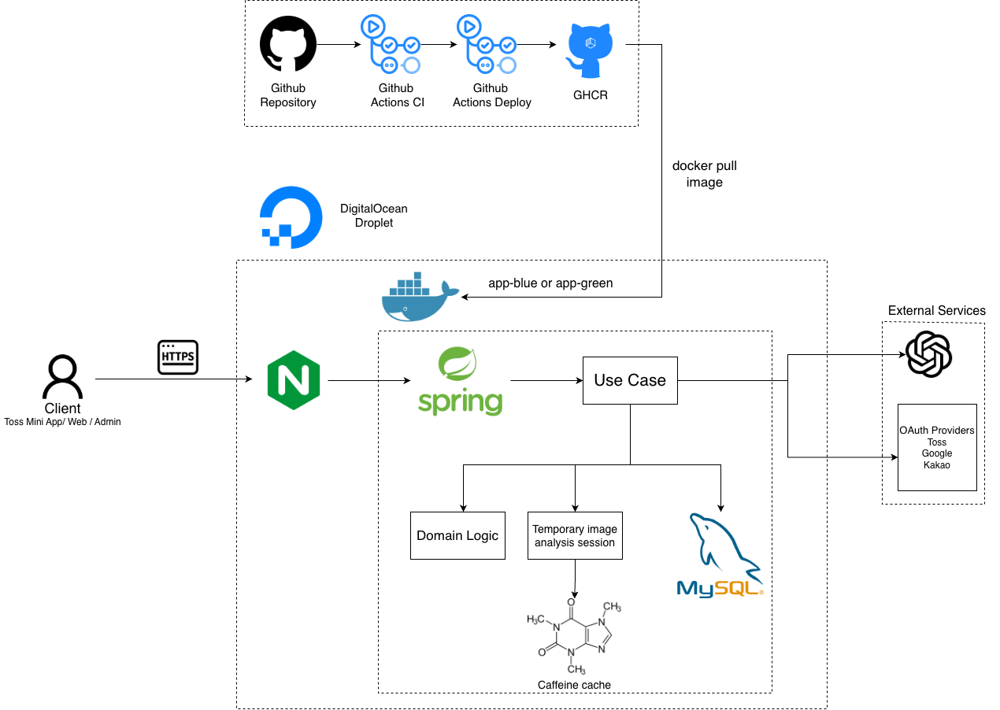
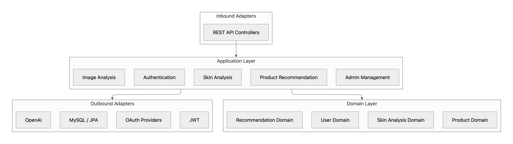

04
진단 요청과 비동기 사진 분석을 하나의 결과로 연결했습니다
시스템 구조

클라이언트 요청은 Nginx를 통해 Spring Boot 애플리케이션으로 전달되며, 영속 데이터는 MySQL에 저장합니다. 사진 분석 작업은 비동기 작업으로 처리하고 Caffeine Cache에 임시 세션으로 관리하여 진단 결과에서 통합합니다. OpenAI API와 OAuth Provider는 외부 어댑터를 통해 연동합니다.
백엔드 구조

Inbound
REST API Controller가 클라이언트 요청을 받고 Application Use Case를 실행합니다.
Application
인증, 피부 분석, 이미지 분석, 상품 추천, 관리자 기능의 흐름을 조합합니다.
Domain
User, Skin Analysis, Recommendation, Product 도메인 정책을 중심에 둡니다.
Outbound
MySQL/JPA, OAuth Provider, OpenAI, JWT 같은 외부 기술을 어댑터로 분리합니다.
사진 분석 공급자나 저장 방식이 바뀌어도 피부 지표 계산과 추천 정책을 다시 작성하지 않도록, 외부 연동은 Adapter에 두고 진단 규칙은 Domain에 남겼습니다.